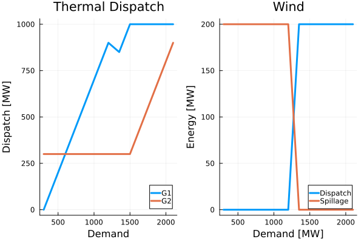
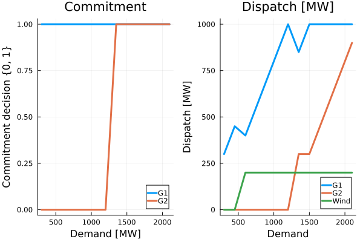
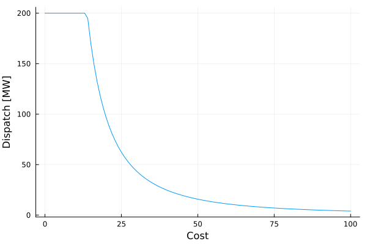

Power Systems
This tutorial was generated using Literate.jl. Download the source as a .jl file.
This tutorial was originally contributed by Yury Dvorkin and Miles Lubin.
This tutorial demonstrates how to formulate basic power systems engineering models in JuMP, covering economic dispatch and unit commitment without taking into account transmission constraints. It also shows how to embed piecewise-linear cost functions as user-defined operators to formulate a nonlinear economic dispatch problem.
Learning intentions:
- Formulate and solve economic dispatch as a linear program, then run a parametric study by modifying the objective in-place rather than rebuilding the model
- Extend economic dispatch to unit commitment by adding binary on/off variables and big-M constraints that couple them to generator output bounds
- Register a user-defined nonlinear cost function with
@operatorto formulate a nonlinear economic dispatch problem
Required packages
This tutorial uses the following packages:
using JuMPimport DataFramesimport HiGHSimport Plotsimport StatsPlotsEconomic dispatch
Economic dispatch (ED) is an optimization problem that minimizes the cost of supplying energy demand subject to operational constraints on power system assets. In its simplest modification, ED is an LP problem solved for an aggregated load and wind forecast and for a single infinitesimal moment.
Mathematically, the ED problem can be written as follows:
\[\min \sum_{i \in I} c^g_{i} \cdot g_{i} + c^w \cdot w,\]
where $c_{i}$ and $g_{i}$ are the incremental cost ($/MWh) and power output (MW) of the $i^{th}$ generator, respectively, and $c^w$ and $w$ are the incremental cost ($/MWh) and wind power injection (MW), respectively.
Subject to the constraints:
- Minimum ($g^{\min}$) and maximum ($g^{\max}$) limits on power outputs of generators: $g^{\min}_{i} \leq g_{i} \leq g^{\max}_{i}.$
- Constraint on the wind power injection: $0 \leq w \leq w^f,$ where $w$ and $w^f$ are the wind power injection and wind power forecast, respectively.
- Power balance constraint: $\sum_{i \in I} g_{i} + w = d^f,$ where $d^f$ is the demand forecast.
Further reading on ED models can be found in A. J. Wood, B. F. Wollenberg, and G. B. Sheblé, "Power Generation, Operation and Control," Wiley, 2013.
Define some input data about the test system.
We define some thermal generators:
function ThermalGenerator( min::Float64, max::Float64, fixed_cost::Float64, variable_cost::Float64,) return ( min = min, max = max, fixed_cost = fixed_cost, variable_cost = variable_cost, )endgenerators = [ ThermalGenerator(0.0, 1000.0, 1000.0, 50.0), ThermalGenerator(300.0, 1000.0, 0.0, 100.0),]2-element Vector{@NamedTuple{min::Float64, max::Float64, fixed_cost::Float64, variable_cost::Float64}}:
(min = 0.0, max = 1000.0, fixed_cost = 1000.0, variable_cost = 50.0)
(min = 300.0, max = 1000.0, fixed_cost = 0.0, variable_cost = 100.0)A wind generator
WindGenerator(variable_cost::Float64) = (variable_cost = variable_cost,)wind_generator = WindGenerator(50.0)(variable_cost = 50.0,)And a scenario
function Scenario(demand::Float64, wind::Float64) return (demand = demand, wind = wind)endscenario = Scenario(1500.0, 200.0)(demand = 1500.0, wind = 200.0)Create a function solve_economic_dispatch, which solves the economic dispatch problem for a given set of input parameters.
function solve_economic_dispatch(generators::Vector, wind, scenario) # Define the economic dispatch (ED) model model = Model(HiGHS.Optimizer) set_silent(model) # Define decision variables # power output of generators N = length(generators) @variable(model, generators[i].min <= g[i=1:N] <= generators[i].max) # wind power injection @variable(model, 0 <= w <= scenario.wind) # Define the objective function @objective( model, Min, sum(generators[i].variable_cost * g[i] for i in 1:N) + wind.variable_cost * w, ) # Define the power balance constraint @constraint(model, sum(g[i] for i in 1:N) + w == scenario.demand) # Solve statement optimize!(model) assert_is_solved_and_feasible(model) # return the optimal value of the objective function and its minimizers return ( g = value.(g), w = value(w), wind_spill = scenario.wind - value(w), total_cost = objective_value(model), )endsolve_economic_dispatch (generic function with 1 method)Solve the economic dispatch problem
solution = solve_economic_dispatch(generators, wind_generator, scenario);println("Dispatch of Generators: ", solution.g, " MW")println("Dispatch of Wind: ", solution.w, " MW")println("Wind spillage: ", solution.wind_spill, " MW")println("Total cost: \$", solution.total_cost)Dispatch of Generators: [1000.0, 300.0] MW
Dispatch of Wind: 200.0 MW
Wind spillage: 0.0 MW
Total cost: $90000.0Economic dispatch with adjustable incremental costs
In the following exercise we adjust the incremental cost of generator G1 and observe its impact on the total cost.
function scale_generator_cost(g, scale) return ThermalGenerator(g.min, g.max, g.fixed_cost, scale * g.variable_cost)endstart = time()c_g_scale_df = DataFrames.DataFrame(; # Scale factor scale = Float64[], # Dispatch of Generator 1 [MW] dispatch_G1 = Float64[], # Dispatch of Generator 2 [MW] dispatch_G2 = Float64[], # Dispatch of Wind [MW] dispatch_wind = Float64[], # Spillage of Wind [MW] spillage_wind = Float64[], # Total cost [$] total_cost = Float64[],)for c_g1_scale in 0.5:0.1:3.0 # Update the incremental cost of the first generator at every iteration. new_generators = scale_generator_cost.(generators, [c_g1_scale, 1.0]) # Solve the economic-dispatch problem with the updated incremental cost sol = solve_economic_dispatch(new_generators, wind_generator, scenario) push!( c_g_scale_df, (c_g1_scale, sol.g[1], sol.g[2], sol.w, sol.wind_spill, sol.total_cost), )endprint(string("elapsed time: ", time() - start, " seconds"))elapsed time: 0.29045796394348145 secondsc_g_scale_df| Row | scale | dispatch_G1 | dispatch_G2 | dispatch_wind | spillage_wind | total_cost |
|---|---|---|---|---|---|---|
| Float64 | Float64 | Float64 | Float64 | Float64 | Float64 | |
| 1 | 0.5 | 1000.0 | 300.0 | 200.0 | 0.0 | 65000.0 |
| 2 | 0.6 | 1000.0 | 300.0 | 200.0 | 0.0 | 70000.0 |
| 3 | 0.7 | 1000.0 | 300.0 | 200.0 | 0.0 | 75000.0 |
| 4 | 0.8 | 1000.0 | 300.0 | 200.0 | 0.0 | 80000.0 |
| 5 | 0.9 | 1000.0 | 300.0 | 200.0 | 0.0 | 85000.0 |
| 6 | 1.0 | 1000.0 | 300.0 | 200.0 | 0.0 | 90000.0 |
| 7 | 1.1 | 1000.0 | 300.0 | 200.0 | 0.0 | 95000.0 |
| 8 | 1.2 | 1000.0 | 300.0 | 200.0 | 0.0 | 100000.0 |
| 9 | 1.3 | 1000.0 | 300.0 | 200.0 | 0.0 | 105000.0 |
| 10 | 1.4 | 1000.0 | 300.0 | 200.0 | 0.0 | 110000.0 |
| 11 | 1.5 | 1000.0 | 300.0 | 200.0 | 0.0 | 115000.0 |
| 12 | 1.6 | 1000.0 | 300.0 | 200.0 | 0.0 | 120000.0 |
| 13 | 1.7 | 1000.0 | 300.0 | 200.0 | 0.0 | 125000.0 |
| 14 | 1.8 | 1000.0 | 300.0 | 200.0 | 0.0 | 130000.0 |
| 15 | 1.9 | 1000.0 | 300.0 | 200.0 | 0.0 | 135000.0 |
| 16 | 2.0 | 300.0 | 1000.0 | 200.0 | 0.0 | 140000.0 |
| 17 | 2.1 | 300.0 | 1000.0 | 200.0 | 0.0 | 141500.0 |
| 18 | 2.2 | 300.0 | 1000.0 | 200.0 | 0.0 | 143000.0 |
| 19 | 2.3 | 300.0 | 1000.0 | 200.0 | 0.0 | 144500.0 |
| 20 | 2.4 | 300.0 | 1000.0 | 200.0 | 0.0 | 146000.0 |
| 21 | 2.5 | 300.0 | 1000.0 | 200.0 | 0.0 | 147500.0 |
| 22 | 2.6 | 300.0 | 1000.0 | 200.0 | 0.0 | 149000.0 |
| 23 | 2.7 | 300.0 | 1000.0 | 200.0 | 0.0 | 150500.0 |
| 24 | 2.8 | 300.0 | 1000.0 | 200.0 | 0.0 | 152000.0 |
| 25 | 2.9 | 300.0 | 1000.0 | 200.0 | 0.0 | 153500.0 |
| 26 | 3.0 | 300.0 | 1000.0 | 200.0 | 0.0 | 155000.0 |
Modifying the JuMP model in-place
Note that in the previous exercise we entirely rebuilt the optimization model at every iteration of the internal loop, which incurs an additional computational burden. This burden can be alleviated if instead of re-building the entire model, we modify the constraints or objective function, as it shown in the example below.
Compare the computing time in case of the above and below models.
function solve_economic_dispatch_inplace( generators::Vector, wind, scenario, scale::AbstractVector{Float64},) obj_out = Float64[] w_out = Float64[] g1_out = Float64[] g2_out = Float64[] # This function only works for two generators @assert length(generators) == 2 model = Model(HiGHS.Optimizer) set_silent(model) N = length(generators) @variable(model, generators[i].min <= g[i=1:N] <= generators[i].max) @variable(model, 0 <= w <= scenario.wind) @objective( model, Min, sum(generators[i].variable_cost * g[i] for i in 1:N) + wind.variable_cost * w, ) @constraint(model, sum(g[i] for i in 1:N) + w == scenario.demand) for c_g1_scale in scale @objective( model, Min, c_g1_scale * generators[1].variable_cost * g[1] + generators[2].variable_cost * g[2] + wind.variable_cost * w, ) optimize!(model) assert_is_solved_and_feasible(model) push!(obj_out, objective_value(model)) push!(w_out, value(w)) push!(g1_out, value(g[1])) push!(g2_out, value(g[2])) end df = DataFrames.DataFrame(; scale = scale, dispatch_G1 = g1_out, dispatch_G2 = g2_out, dispatch_wind = w_out, spillage_wind = scenario.wind .- w_out, total_cost = obj_out, ) return dfendstart = time()inplace_df = solve_economic_dispatch_inplace( generators, wind_generator, scenario, 0.5:0.1:3.0,)print(string("elapsed time: ", time() - start, " seconds"))elapsed time: 0.21550679206848145 secondsFor small models, adjusting specific constraints or the objective function is sometimes faster and sometimes slower than re-building the entire model. However, as the problem size increases, updating the model in-place is usually faster.
inplace_df| Row | scale | dispatch_G1 | dispatch_G2 | dispatch_wind | spillage_wind | total_cost |
|---|---|---|---|---|---|---|
| Float64 | Float64 | Float64 | Float64 | Float64 | Float64 | |
| 1 | 0.5 | 1000.0 | 300.0 | 200.0 | 0.0 | 65000.0 |
| 2 | 0.6 | 1000.0 | 300.0 | 200.0 | 0.0 | 70000.0 |
| 3 | 0.7 | 1000.0 | 300.0 | 200.0 | 0.0 | 75000.0 |
| 4 | 0.8 | 1000.0 | 300.0 | 200.0 | 0.0 | 80000.0 |
| 5 | 0.9 | 1000.0 | 300.0 | 200.0 | 0.0 | 85000.0 |
| 6 | 1.0 | 1000.0 | 300.0 | 200.0 | 0.0 | 90000.0 |
| 7 | 1.1 | 1000.0 | 300.0 | 200.0 | 0.0 | 95000.0 |
| 8 | 1.2 | 1000.0 | 300.0 | 200.0 | 0.0 | 100000.0 |
| 9 | 1.3 | 1000.0 | 300.0 | 200.0 | 0.0 | 105000.0 |
| 10 | 1.4 | 1000.0 | 300.0 | 200.0 | 0.0 | 110000.0 |
| 11 | 1.5 | 1000.0 | 300.0 | 200.0 | 0.0 | 115000.0 |
| 12 | 1.6 | 1000.0 | 300.0 | 200.0 | 0.0 | 120000.0 |
| 13 | 1.7 | 1000.0 | 300.0 | 200.0 | 0.0 | 125000.0 |
| 14 | 1.8 | 1000.0 | 300.0 | 200.0 | 0.0 | 130000.0 |
| 15 | 1.9 | 1000.0 | 300.0 | 200.0 | 0.0 | 135000.0 |
| 16 | 2.0 | 1000.0 | 300.0 | 200.0 | 0.0 | 140000.0 |
| 17 | 2.1 | 300.0 | 1000.0 | 200.0 | 0.0 | 141500.0 |
| 18 | 2.2 | 300.0 | 1000.0 | 200.0 | 0.0 | 143000.0 |
| 19 | 2.3 | 300.0 | 1000.0 | 200.0 | 0.0 | 144500.0 |
| 20 | 2.4 | 300.0 | 1000.0 | 200.0 | 0.0 | 146000.0 |
| 21 | 2.5 | 300.0 | 1000.0 | 200.0 | 0.0 | 147500.0 |
| 22 | 2.6 | 300.0 | 1000.0 | 200.0 | 0.0 | 149000.0 |
| 23 | 2.7 | 300.0 | 1000.0 | 200.0 | 0.0 | 150500.0 |
| 24 | 2.8 | 300.0 | 1000.0 | 200.0 | 0.0 | 152000.0 |
| 25 | 2.9 | 300.0 | 1000.0 | 200.0 | 0.0 | 153500.0 |
| 26 | 3.0 | 300.0 | 1000.0 | 200.0 | 0.0 | 155000.0 |
Inefficient usage of wind generators
The economic dispatch problem does not perform commitment decisions and, thus, assumes that all generators must be dispatched at least at their minimum power output limit. This approach is not cost efficient and may lead to absurd decisions. For example, if $d = \sum_{i \in I} g^{\min}_{i}$, the wind power injection must be zero, that is, all available wind generation is spilled, to meet the minimum power output constraints on generators.
In the following example, we adjust the total demand and observed how it affects wind spillage.
demand_scale_df = DataFrames.DataFrame(; demand = Float64[], dispatch_G1 = Float64[], dispatch_G2 = Float64[], dispatch_wind = Float64[], spillage_wind = Float64[], total_cost = Float64[],)function scale_demand(scenario, scale) return Scenario(scale * scenario.demand, scenario.wind)endfor demand_scale in 0.2:0.1:1.4 new_scenario = scale_demand(scenario, demand_scale) sol = solve_economic_dispatch(generators, wind_generator, new_scenario) push!( demand_scale_df, ( new_scenario.demand, sol.g[1], sol.g[2], sol.w, sol.wind_spill, sol.total_cost, ), )enddemand_scale_df| Row | demand | dispatch_G1 | dispatch_G2 | dispatch_wind | spillage_wind | total_cost |
|---|---|---|---|---|---|---|
| Float64 | Float64 | Float64 | Float64 | Float64 | Float64 | |
| 1 | 300.0 | 0.0 | 300.0 | 0.0 | 200.0 | 30000.0 |
| 2 | 450.0 | 150.0 | 300.0 | 0.0 | 200.0 | 37500.0 |
| 3 | 600.0 | 300.0 | 300.0 | 0.0 | 200.0 | 45000.0 |
| 4 | 750.0 | 450.0 | 300.0 | 0.0 | 200.0 | 52500.0 |
| 5 | 900.0 | 600.0 | 300.0 | 0.0 | 200.0 | 60000.0 |
| 6 | 1050.0 | 750.0 | 300.0 | 0.0 | 200.0 | 67500.0 |
| 7 | 1200.0 | 900.0 | 300.0 | 0.0 | 200.0 | 75000.0 |
| 8 | 1350.0 | 850.0 | 300.0 | 200.0 | 0.0 | 82500.0 |
| 9 | 1500.0 | 1000.0 | 300.0 | 200.0 | 0.0 | 90000.0 |
| 10 | 1650.0 | 1000.0 | 450.0 | 200.0 | 0.0 | 105000.0 |
| 11 | 1800.0 | 1000.0 | 600.0 | 200.0 | 0.0 | 120000.0 |
| 12 | 1950.0 | 1000.0 | 750.0 | 200.0 | 0.0 | 135000.0 |
| 13 | 2100.0 | 1000.0 | 900.0 | 200.0 | 0.0 | 150000.0 |
dispatch_plot = StatsPlots.@df( demand_scale_df, Plots.plot( :demand, [:dispatch_G1, :dispatch_G2], labels = ["G1" "G2"], title = "Thermal Dispatch", legend = :bottomright, linewidth = 3, xlabel = "Demand", ylabel = "Dispatch [MW]", ),)wind_plot = StatsPlots.@df( demand_scale_df, Plots.plot( :demand, [:dispatch_wind, :spillage_wind], labels = ["Dispatch" "Spillage"], title = "Wind", legend = :bottomright, linewidth = 3, xlabel = "Demand [MW]", ylabel = "Energy [MW]", ),)Plots.plot(dispatch_plot, wind_plot)
This particular drawback can be overcome by introducing binary decisions on the "on/off" status of generators. This model is called unit commitment and considered later in these notes.
For further reading on the interplay between wind generation and the minimum power output constraints of generators, we refer interested readers to R. Baldick, "Wind and energy markets: a case study of Texas," IEEE Systems Journal, vol. 6, pp. 27-34, 2012.
Unit commitment
The Unit Commitment (UC) model can be obtained from ED model by introducing binary variable associated with each generator. This binary variable can attain two values: if it is "1," the generator is synchronized and, thus, can be dispatched, otherwise, that is, if the binary variable is "0," that generator is not synchronized and its power output is set to 0.
To obtain the mathematical formulation of the UC model, we will modify the constraints of the ED model as follows:
\[g^{\min}_{i} \cdot u_{t,i} \leq g_{i} \leq g^{\max}_{i} \cdot u_{t,i},\]
where $u_{i} \in \{0,1\}.$ In this constraint, if $u_{i} = 0$, then $g_{i} = 0$. On the other hand, if $u_{i} = 1$, then $g^{min}_{i} \leq g_{i} \leq g^{max}_{i}$.
For further reading on the UC problem we refer interested readers to G. Morales-Espana, J. M. Latorre, and A. Ramos, "Tight and Compact MILP Formulation for the Thermal Unit Commitment Problem," IEEE Transactions on Power Systems, vol. 28, pp. 4897-4908, 2013.
In the following example we convert the ED model explained above to the UC model.
function solve_unit_commitment(generators::Vector, wind, scenario) model = Model(HiGHS.Optimizer) set_silent(model) N = length(generators) @variable(model, 0 <= g[i=1:N] <= generators[i].max) @variable(model, 0 <= w <= scenario.wind) @constraint(model, sum(g[i] for i in 1:N) + w == scenario.demand) # !!! New: add binary on-off variables for each generator @variable(model, u[i=1:N], Bin) @constraint(model, [i = 1:N], g[i] <= generators[i].max * u[i]) @constraint(model, [i = 1:N], g[i] >= generators[i].min * u[i]) @objective( model, Min, sum(generators[i].variable_cost * g[i] for i in 1:N) + wind.variable_cost * w + # !!! new sum(generators[i].fixed_cost * u[i] for i in 1:N) ) optimize!(model) status = termination_status(model) if status != OPTIMAL return (status = status,) end @assert primal_status(model) == FEASIBLE_POINT return ( status = status, g = value.(g), w = value(w), wind_spill = scenario.wind - value(w), u = value.(u), total_cost = objective_value(model), )endsolve_unit_commitment (generic function with 1 method)Solve the unit commitment problem
solution = solve_unit_commitment(generators, wind_generator, scenario)println("Dispatch of Generators: ", solution.g, " MW")println("Commitments of Generators: ", solution.u)println("Dispatch of Wind: ", solution.w, " MW")println("Wind spillage: ", solution.wind_spill, " MW")println("Total cost: \$", solution.total_cost)Dispatch of Generators: [1000.0, 300.0] MW
Commitments of Generators: [1.0, 1.0]
Dispatch of Wind: 200.0 MW
Wind spillage: 0.0 MW
Total cost: $91000.0Unit commitment as a function of demand
After implementing the unit commitment model, we can now assess the interplay between the minimum power output constraints on generators and wind generation.
uc_df = DataFrames.DataFrame(; demand = Float64[], commitment_G1 = Float64[], commitment_G2 = Float64[], dispatch_G1 = Float64[], dispatch_G2 = Float64[], dispatch_wind = Float64[], spillage_wind = Float64[], total_cost = Float64[],)for demand_scale in 0.2:0.1:1.4 new_scenario = scale_demand(scenario, demand_scale) sol = solve_unit_commitment(generators, wind_generator, new_scenario) if sol.status == OPTIMAL push!( uc_df, ( new_scenario.demand, sol.u[1], sol.u[2], sol.g[1], sol.g[2], sol.w, sol.wind_spill, sol.total_cost, ), ) end println("Status: $(sol.status) for demand_scale = $(demand_scale)")endStatus: OPTIMAL for demand_scale = 0.2
Status: OPTIMAL for demand_scale = 0.3
Status: OPTIMAL for demand_scale = 0.4
Status: OPTIMAL for demand_scale = 0.5
Status: OPTIMAL for demand_scale = 0.6
Status: OPTIMAL for demand_scale = 0.7
Status: OPTIMAL for demand_scale = 0.8
Status: OPTIMAL for demand_scale = 0.9
Status: OPTIMAL for demand_scale = 1.0
Status: OPTIMAL for demand_scale = 1.1
Status: OPTIMAL for demand_scale = 1.2
Status: OPTIMAL for demand_scale = 1.3
Status: OPTIMAL for demand_scale = 1.4uc_df| Row | demand | commitment_G1 | commitment_G2 | dispatch_G1 | dispatch_G2 | dispatch_wind | spillage_wind | total_cost |
|---|---|---|---|---|---|---|---|---|
| Float64 | Float64 | Float64 | Float64 | Float64 | Float64 | Float64 | Float64 | |
| 1 | 300.0 | 1.0 | -0.0 | 300.0 | 0.0 | 0.0 | 200.0 | 16000.0 |
| 2 | 450.0 | 1.0 | -0.0 | 450.0 | 0.0 | 0.0 | 200.0 | 23500.0 |
| 3 | 600.0 | 1.0 | -0.0 | 400.0 | 0.0 | 200.0 | 0.0 | 31000.0 |
| 4 | 750.0 | 1.0 | -0.0 | 550.0 | 0.0 | 200.0 | 0.0 | 38500.0 |
| 5 | 900.0 | 1.0 | -0.0 | 700.0 | 0.0 | 200.0 | 0.0 | 46000.0 |
| 6 | 1050.0 | 1.0 | -0.0 | 850.0 | 0.0 | 200.0 | 0.0 | 53500.0 |
| 7 | 1200.0 | 1.0 | -0.0 | 1000.0 | -0.0 | 200.0 | 0.0 | 61000.0 |
| 8 | 1350.0 | 1.0 | 1.0 | 850.0 | 300.0 | 200.0 | 0.0 | 83500.0 |
| 9 | 1500.0 | 1.0 | 1.0 | 1000.0 | 300.0 | 200.0 | 0.0 | 91000.0 |
| 10 | 1650.0 | 1.0 | 1.0 | 1000.0 | 450.0 | 200.0 | 0.0 | 106000.0 |
| 11 | 1800.0 | 1.0 | 1.0 | 1000.0 | 600.0 | 200.0 | 0.0 | 121000.0 |
| 12 | 1950.0 | 1.0 | 1.0 | 1000.0 | 750.0 | 200.0 | 0.0 | 136000.0 |
| 13 | 2100.0 | 1.0 | 1.0 | 1000.0 | 900.0 | 200.0 | 0.0 | 151000.0 |
commitment_plot = StatsPlots.@df( uc_df, Plots.plot( :demand, [:commitment_G1, :commitment_G2], labels = ["G1" "G2"], title = "Commitment", legend = :bottomright, linewidth = 3, xlabel = "Demand [MW]", ylabel = "Commitment decision {0, 1}", ),)dispatch_plot = StatsPlots.@df( uc_df, Plots.plot( :demand, [:dispatch_G1, :dispatch_G2, :dispatch_wind], labels = ["G1" "G2" "Wind"], title = "Dispatch [MW]", legend = :bottomright, linewidth = 3, xlabel = "Demand", ylabel = "Dispatch [MW]", ),)Plots.plot(commitment_plot, dispatch_plot)
Nonlinear economic dispatch
As a final example, we modify our economic dispatch problem in two ways:
- The thermal cost function is user-defined
- The output of the wind is only the square-root of the dispatch
import Ipopt""" thermal_cost_function(g)A user-defined thermal cost function in pure-Julia! You can includenonlinearities, and even things like control flow.!!! warning It's still up to you to make sure that the function has a meaningful derivative."""function thermal_cost_function(g) if g <= 500 return g else return g + 1e-2 * (g - 500)^2 endendfunction solve_nonlinear_economic_dispatch( generators::Vector, wind, scenario; silent::Bool = false,) model = Model(Ipopt.Optimizer) if silent set_silent(model) end @operator(model, op_tcf, 1, thermal_cost_function) N = length(generators) @variable(model, generators[i].min <= g[i=1:N] <= generators[i].max) @variable(model, 0 <= w <= scenario.wind) @objective( model, Min, sum(generators[i].variable_cost * op_tcf(g[i]) for i in 1:N) + wind.variable_cost * w, ) @constraint(model, sum(g[i] for i in 1:N) + sqrt(w) == scenario.demand) optimize!(model) assert_is_solved_and_feasible(model) return ( g = value.(g), w = value(w), wind_spill = scenario.wind - value(w), total_cost = objective_value(model), )endsolution = solve_nonlinear_economic_dispatch(generators, wind_generator, scenario)(g = [847.3509933774712, 648.6754966887423], w = 15.788781193899027, wind_spill = 184.211218806101, total_cost = 190455.298013245)Now let's see how the wind is dispatched as a function of the cost:
wind_cost = 0.0:1:100wind_dispatch = Float64[]for c in wind_cost sol = solve_nonlinear_economic_dispatch( generators, WindGenerator(c), scenario; silent = true, ) push!(wind_dispatch, sol.w)endPlots.plot( wind_cost, wind_dispatch; xlabel = "Cost", ylabel = "Dispatch [MW]", label = false,)